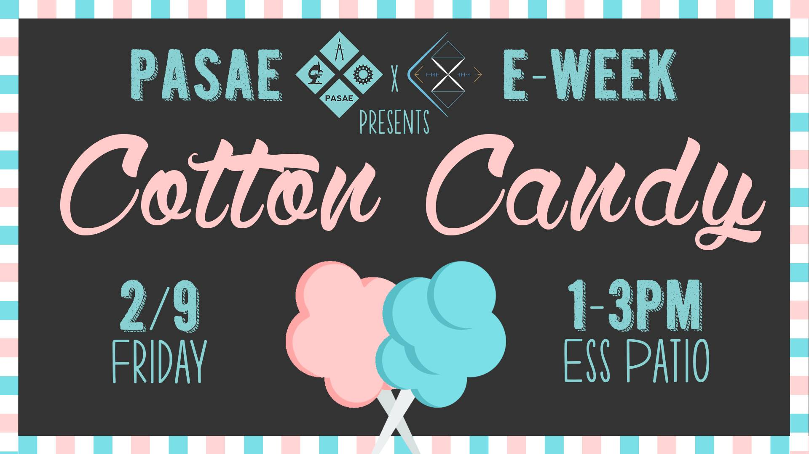
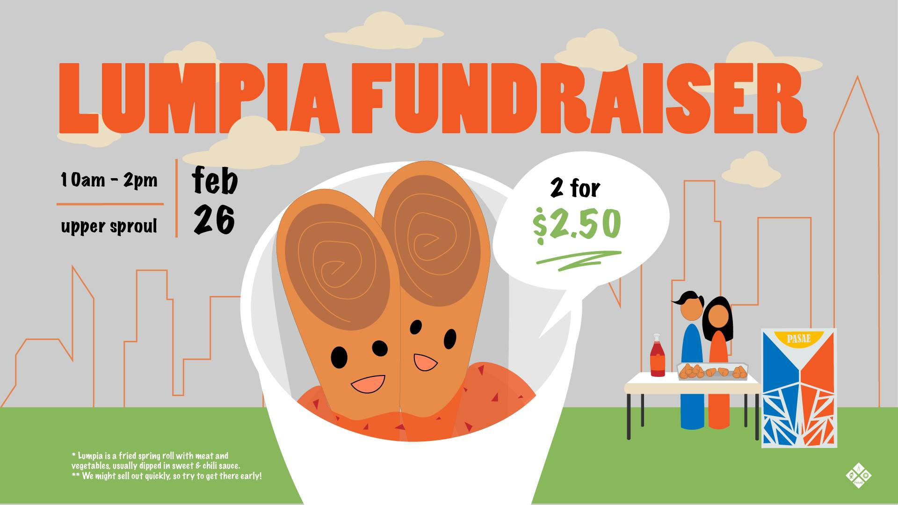
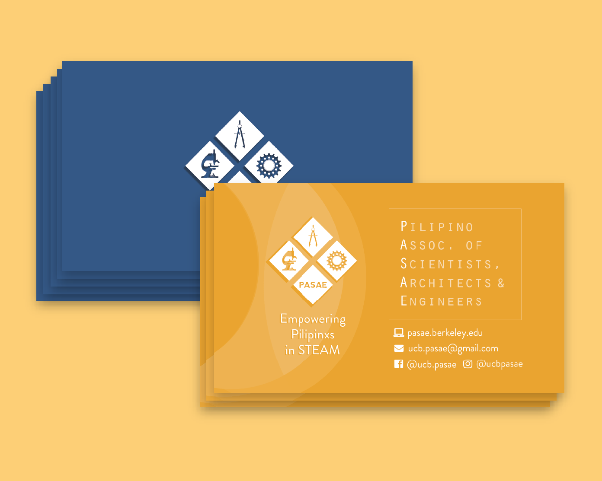
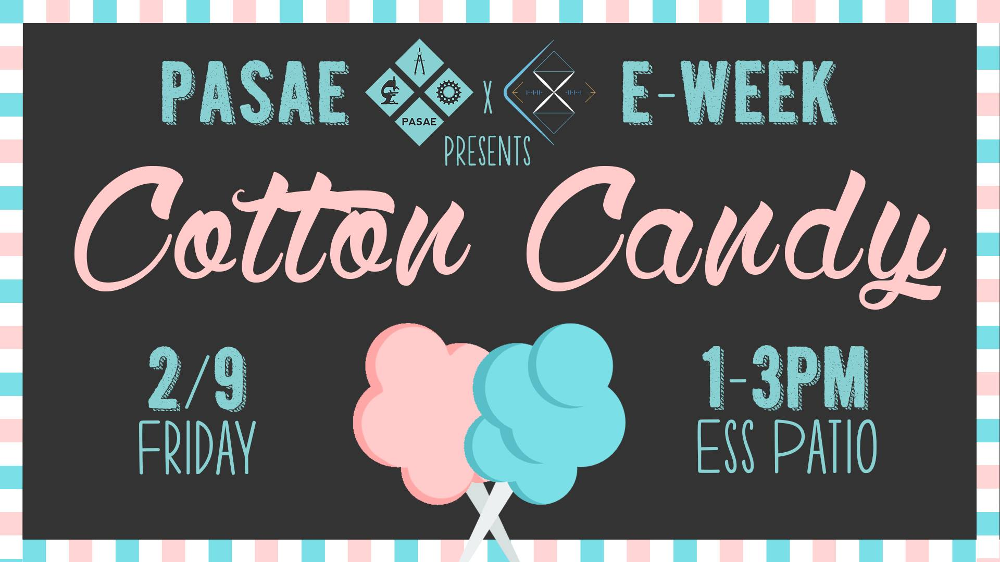
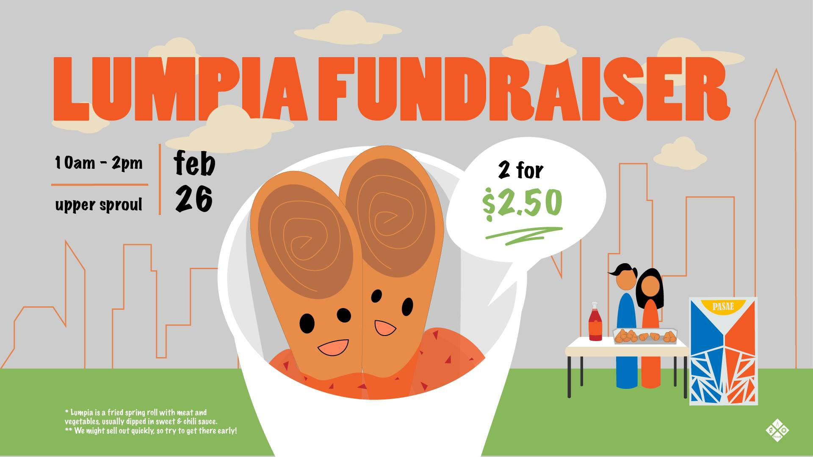
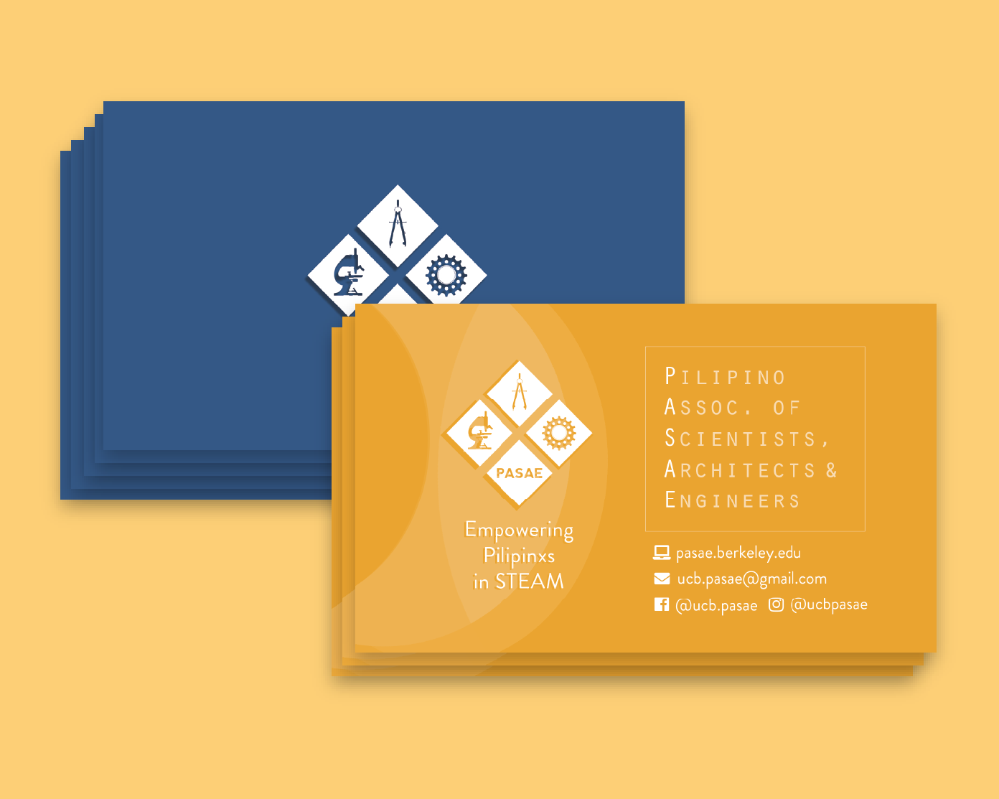
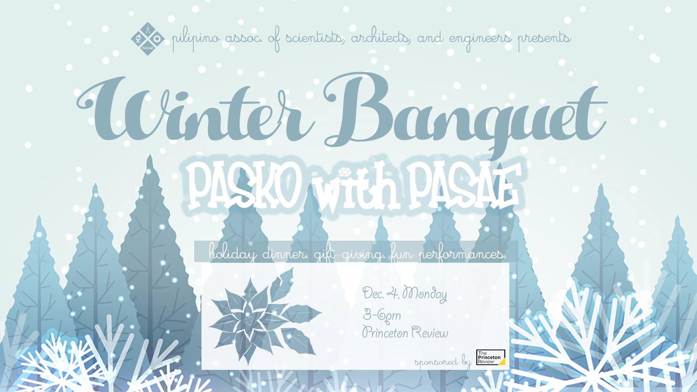
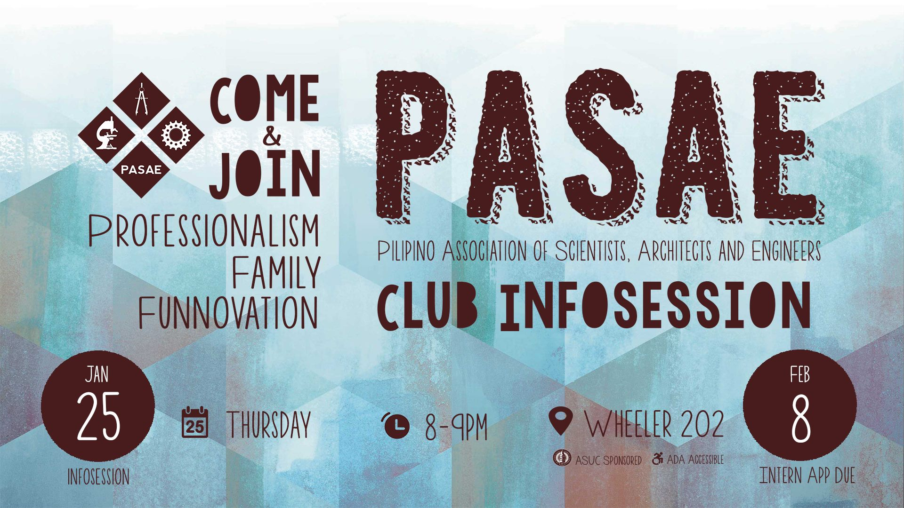
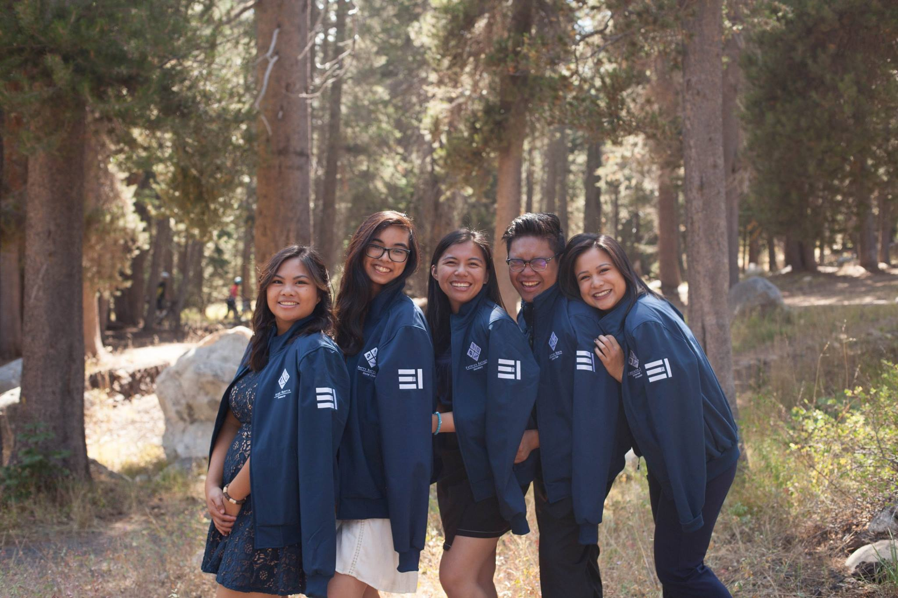
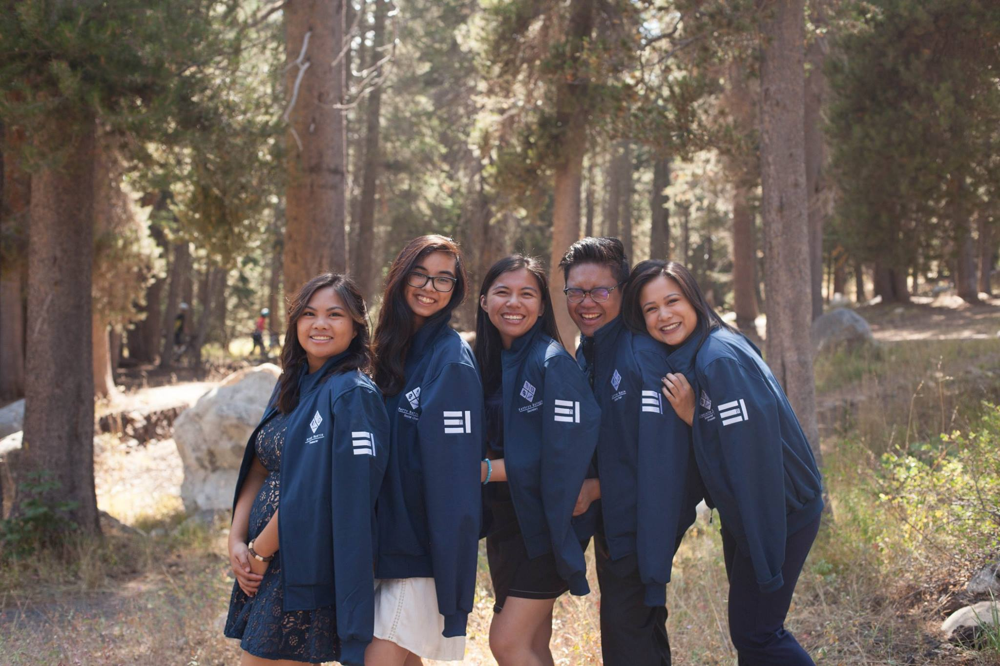

From PR Coordinator to Creative Director, I lead the creative team in generating ideas for and hands-on involvement with graphic design, marketing, photography and videography.
My main job in PR is advertising. For each event, I designed digital posters using Illustrator and posted them on Facebook so people could share and invite others. These events range from fundraisers and intern socials, to alumni dinners and professional workshops.
 








 
